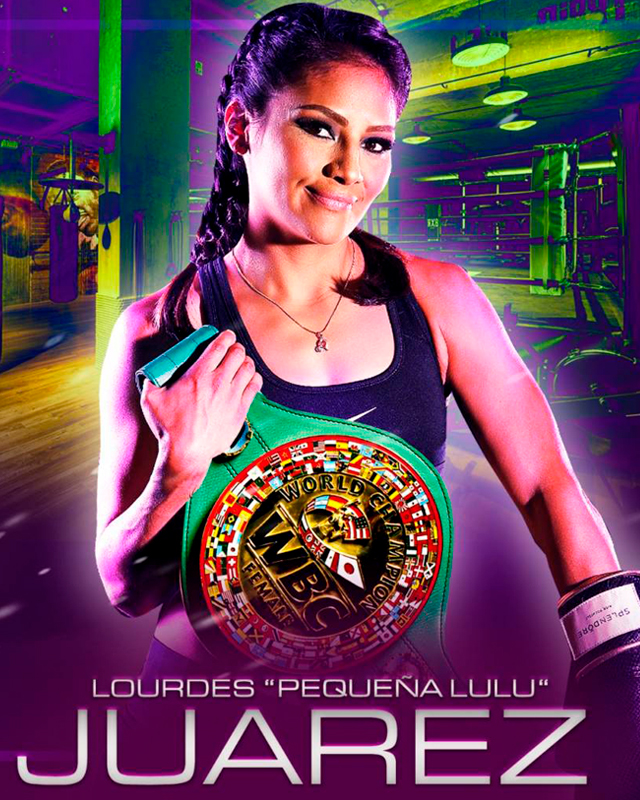

← Nuestros peleadores
Lourdes Juárez · La Pequeña Lulú

Coyoacán, CDMX · 40-4-0, 5 KO’s
Con un inicio complicado en el boxeo, tuvo que demostrar que sus logros no eran mérito de su hermana Mariana 'La Barby' Juárez, sino de su talento, mismo que mostró desde su debut, acumulando victorias cada vez de mayor grado de dificultad, abriéndose paso a la conquista de su primer campeonato mundial derrotando a Guadalupe Martínez en plena pandemia, combate efectuado en los estudios de Televisa; título que las convirtió en la primer pareja de hermanas campeonas mundiales absolutas en México; tras dar brillo a su corona, conquistó su segundo campeonato en diferentes categorías, convirtiéndose en la monarca absoluta minimosca verde y oro, título que ya defendió como estelarista de DAZN en los Estados Unidos con dos grandes exhibiciones sobre la mexicana Yesica Nery Plata y la costarricense Yokasta Valle.